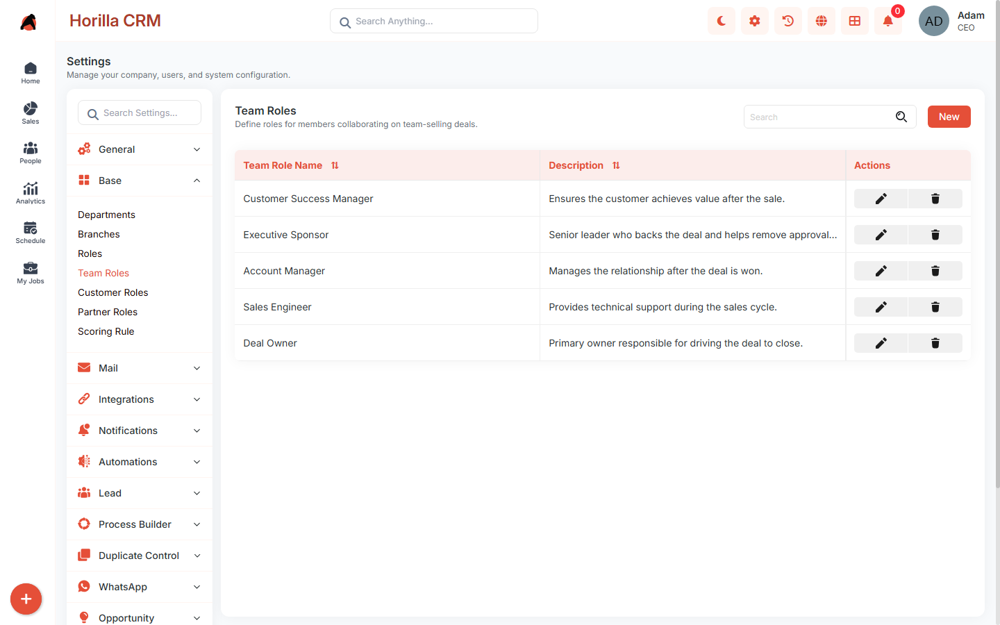
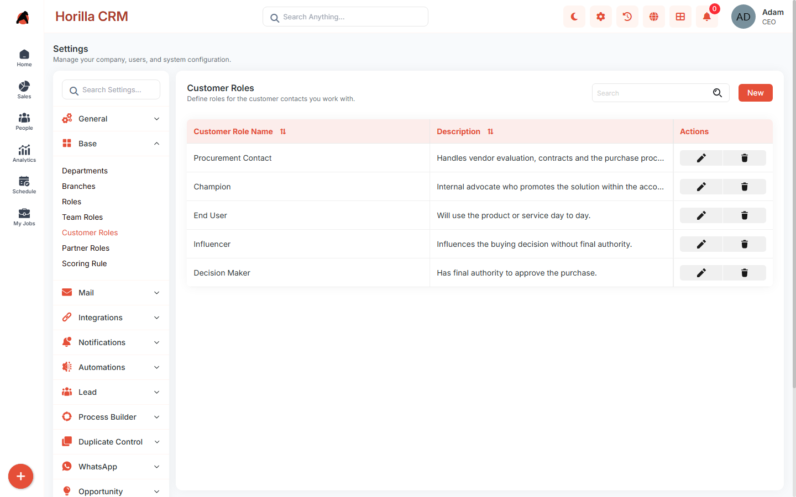
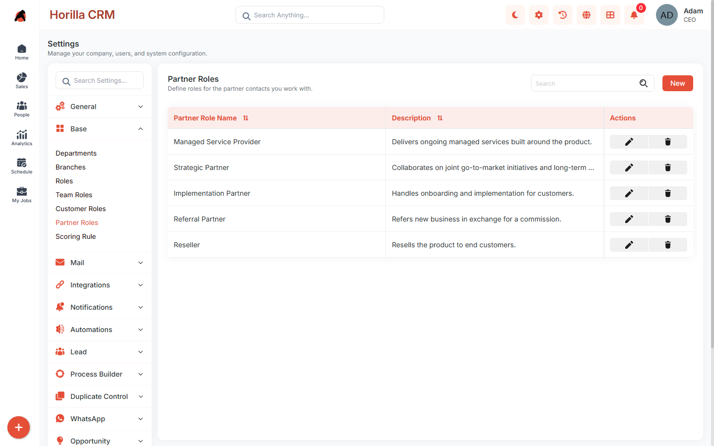

Introduction
The Organizational Structure & Role Management module lets administrators define role hierarchies across teams, customers and partners. These configurations underpin data organisation, access control and collaboration throughout the CRM.
Key Features and Functionalities
1.1 Team Role Management
Purpose: set up internal team roles that manage responsibilities and permissions.
- Team roles control feature access, workflow assignments and collaboration boundaries across functional groups.
- They set the access levels and responsibilities of internal users, covering permissions, feature visibility and workflow ownership.

1.2 Customer Role Management
Purpose: classify customers by the type of relationship they hold.
- Customer roles make tailored communication, workflows and services possible for each customer segment.
- They record the relationship a customer holds — for example Prospect, Active Customer or Partner — which then guides communication, processes and service delivery.

1.3 Partner Role Management
Purpose: configure partner relationship categories for external collaboration.
- Partner roles define collaboration models, partner hierarchies and access permissions for joint processes.
- They set the relationship categories used for external business partners, supporting role-based collaboration, access rights and partner-specific workflows.

Benefits
- A clear organisational hierarchy makes management more efficient.
- Role-based access control protects sensitive information.
- Collaboration improves across teams, customers and partners.
- Engagement strategies can be personalised for different customer categories.
- Reporting accuracy improves because roles align with the organisational structure.
- Partner collaboration is stronger thanks to controlled role definitions.